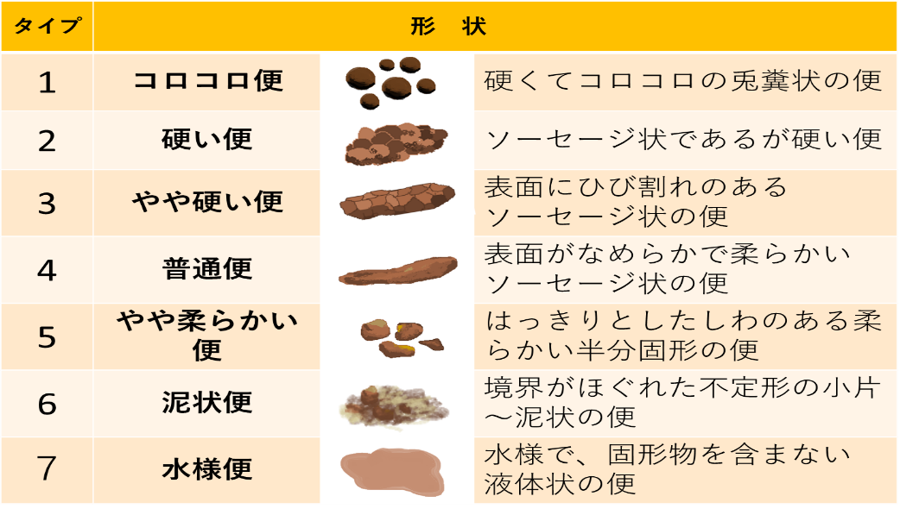
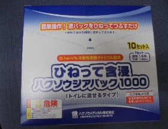

Ⅴ. 疾患別感染対策 10. 感染性下痢症
- 原因微生物の種類と潜伏期間
※ロタウイルスは、基幹定点病院として届出が必要となる。（「Ⅷ.感染症に伴う届出事項」を参照）
※※腸管出血性大腸菌、細菌性赤痢、コレラ、腸チフス、パラチフスは三類感染症であり、届出が必要となる。（「Ⅷ.感染症に伴う届出事項」を参照）
潜伏期間 4日以上 2～3日 ～1日 | ||
ウイルス | ノロウイルス ロタウイルス※ | 1日～3日 1日～2日 |
細 菌 | 黄色ブドウ球菌 腸炎ビブリオ ウェルシュ菌 （Clostridium perfringens） サルモネラ菌 ボツリヌス菌 赤痢菌※※ カンピロバクター 腸管出血性大腸菌 （O-157等）※※ 腸チフス菌※※ パラチフス菌※※ | 3～20時間 6～18時間 12～24時間 12～36時間 1日～3日 2日～5日 3日～5日 7日～14日 1～6時間 |
- 下痢症状出現時の検査
- 便培養
- 下痢症状出現時の検査
入院３日までの下痢に対しては、病原微生物特定のため便培養提出を積極的に考慮する。
- CDトキシンチェック
クロストリジウム・ディフィシルは、抗菌薬関連下痢症の代表的な原因菌である。抗菌薬の使用により、腸内フローラが乱れ、多くの抗菌薬に耐性をもつクロストリジウム・ディフィシルが増殖する。抗菌薬開始後の下痢症状出現時には、検査の実施を考慮する。また、下痢症状の改善を認める場合や下痢症状がない場合に、陰性確認を目的とした検査の実施は不要である。
- ノロ・ロタウイルス簡易検査
集団発生の状況や症状によって、実施する。検査希望時は、検体は、微生物検査室（内線：6681）へ電話連絡の上、直接持参する。
- 発症者への対応
患者の排便状況を確認し、下記のフローチャートに沿って感染拡大のリスクをアセスメントする。
【下痢症状のある患者の感染対策アセスメントフローチャート】

GASTROENTEROLOGY 2006;130(5):1480-1491より改変
GASTROENTEROLOGY 2006;130(5):1480-1491より改変
GASTROENTEROLOGY 2006;130(5):1480-1491より改変
ブリストル便スケール
下剤・経腸栄養の開始などの誘因なく、
便性状が泥状または水様である
（ブリストル便スケール タイプ6または7に該当）
便意や腹痛が繰り返し起こり、
排便コントロールが困難な状況である
YES
NO
周囲環境を汚染する可能性があるため
標準予防策+接触感染対策
個室隔離（可能な限り
トイレ付個室が望ましい）
YES
標準予防策
下痢症状がない状態が
48時間以上続いている
NO
NO
YES
便の性状を毎日評価する
- 標準予防策+接触感染対策で対応する場合
- 環境整備
- 毎日の清掃
- 環境整備
- 標準予防策+接触感染対策で対応する場合
- 下痢の原因菌には、アルコール消毒に耐性があるものもあるため、高頻度接触面を、0.02％次亜塩素酸ナトリウム含浸クロスで清拭清掃する。
※高頻度接触面：手指が頻繁に触れるオーバーテーブル、ベッド柵、床頭台、ドアノブ等
- 退室時の清掃
- 退院時清掃の特別清掃を依頼する。
- 下痢の原因菌には、アルコールに耐性があるものもあるため、高頻度接触面を、0.02％次亜塩素酸ナトリウム含浸クロスで清拭清掃する。
- カーテン交換を依頼する。
- トイレの使用
- 個室内のトイレを利用する場合
- トイレの使用
- 毎日の清掃時に、0.1％次亜塩素酸ナトリウム含浸クロスで清拭清掃するよう清掃員へ依頼する。
- ポータブルトイレを利用する場合
- 毎日、便座や手すりを、0.1％次亜塩素酸ナトリウム含浸クロスで清拭清掃する。
- 排泄物は速やかに廃棄し、ベッドパンウォッシャーで洗浄消毒する。
- 棟内共有のトイレを使用する場合
- 使用毎に、患者に0.1％次亜塩素酸ナトリウム含浸クロスで清拭消毒するよう説明する。
毎日の清掃時に、0.1％次亜塩素酸ナトリウム含浸クロスで清拭清掃するよう清掃員へ依頼する。
下痢・嘔吐症状のある患者の環境清掃
ディスポーザブル0.1％次亜塩素酸ナトリウム含浸ガーゼ
「ひねって含浸ハクゾウジアパック1000®」

患者自身でトイレ使用後に清拭する際に使用。
必要時、感染制御部に連絡の上、取りにきて下さい。
通常清掃用
次亜塩素酸ナトリウム0.02％
（200ｐｍ）
●清拭箇所：高頻度接触面
ベッド柵、オーバーベッドテーブル、ナースコール、ベッドライトスイッチ、ドアノブ、冷蔵庫取手など
●作成方法
テキサント®：300倍希釈
ミルトン®・ミルクポン®：50倍希釈
※遮光して保管し、作成後24時間で廃棄
で廃棄
吐瀉物の清掃用
次亜塩素酸ナトリウム0.1％
（1000ｐｍ）
●清拭箇所：吐瀉物のあった半径2メートル範囲まで飛散していると想定して清拭する
●作成方法
テキサント®：60倍希釈
ミルトン®・ミルクポン®:10倍希釈
※遮光して保管し、作成後24時間で廃棄
- 物品の管理
使用器具（血圧計、聴診器、酸素モニターなど）は個人専用とする。個人専用化が不可能な場合には、使用ごとに0.02％次亜塩素酸によって清拭消毒を実施する。
- 食器類の取り扱い
給食の食器の洗浄は、通常通り病院の厨房に返却してよい。
- 入浴・洗髪
- 順番はその日の最後とする※。
- 入浴後の清掃は、通常の清掃の清拭を行う。手すりなど高頻度接触面を、「①環境整備 (i)毎日の清掃」に準じて、0.02％次亜塩素酸ナトリウム含浸クロスで清拭する。
- 入浴・洗髪
※ただし、介助が必要等の理由により、最後に入浴してもらうことができない場合は、入浴後に(ii)の方法で清掃する。
- リネン類の処理
患者には、できる限り院内採用の病衣を着用してもらう。
- 吐物や便の付着がある場合
- 適切な防護用具（手袋・エプロン・マスク・アイガード）を装着して取り扱う
- 周囲環境を汚染しないように注意しながら、片付ける。
【院内の病衣やシーツ類】
半透明のビニール袋に入れて口を縛り、洗濯を依頼する。
【院内で洗濯する場合】
部分洗いで吐物や便を除去し、0.1％次亜塩素酸ナトリウムに、浸漬消毒する。その後、病棟用の洗濯機で、通常の洗濯方法（洗剤と次亜塩素酸ナトリウムを使用）で洗濯する。
【自宅で洗濯する場合】
ビニールに入れて持ち帰る。
部分洗いで吐物や便を除去し、0.1％次亜塩素酸ナトリウム（キッチンハイター等の家庭用塩素系漂白剤で作成）に10分以上浸漬消毒、または85℃以上の熱湯で1分以上加熱消毒後、他の洗濯物と分けて洗濯し、乾燥させる。
- 吐物や便の付着がない場合
- 通常通りの洗濯方法で良い。
- 院内の病衣やシーツ類は、半透明のビニール袋に入れて口を縛り、洗濯を依頼する。
- 廃棄物処理
ゴミは通常の廃棄方法に準ずる。
- 院内で複数患者に下痢症状が発生した場合
下痢症状を発症する患者が集団発生した場合、院内感染や食中毒の可能性を判断するため、感染制御部に直ちに連絡する。
感染制御部に連絡
（内線５０９３）
同一病棟で同時期に２名以上の患者に下痢などの症状が発現